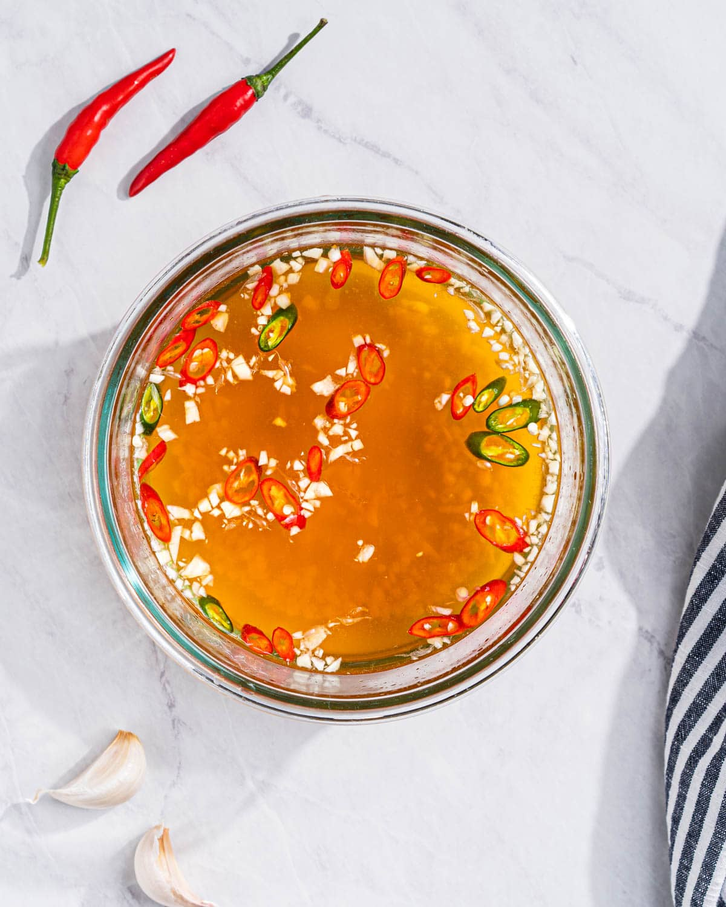

Nuoc Mam

What is Nuoc Mam?
Nuoc Mam (also known as Nuoc Cham) is a traditional Vietnamese sauce that can be either used as a dip or as a pour over sauce.
It is an all in one type of sauce that has a light refreshing zestiness, is sweet, salty, and umami packed flavored bomb that can
elevate any dish it is in. It is a dish that has no set amount of ingredients and each person tweaks it to their preferences.
In this recipe, you will learn the basic ratio and then from there, add whatever else you want!
Ingredients
- Fish Sauce (I prefer three crabs but there many options to choose from)
- Sugar
- Water
- Garlic
- Lime Juice
- Chilis
Steps
- Make a simple syrup by adding equal parts of water and sugar over low heat, stirring until all the sugar has dissolved and then cool
- Stir into the syrup chopped garlic, one juiced lime, fish sauce (about 2-4 tablespoons), and the chopped chilis
- Taste test and add either more fish sauce or more lime juice as needed. The finished product should have a light amber color
Addional Notes
- Store in a glass container as the smell won't penetrate the container
- Can store for a few months